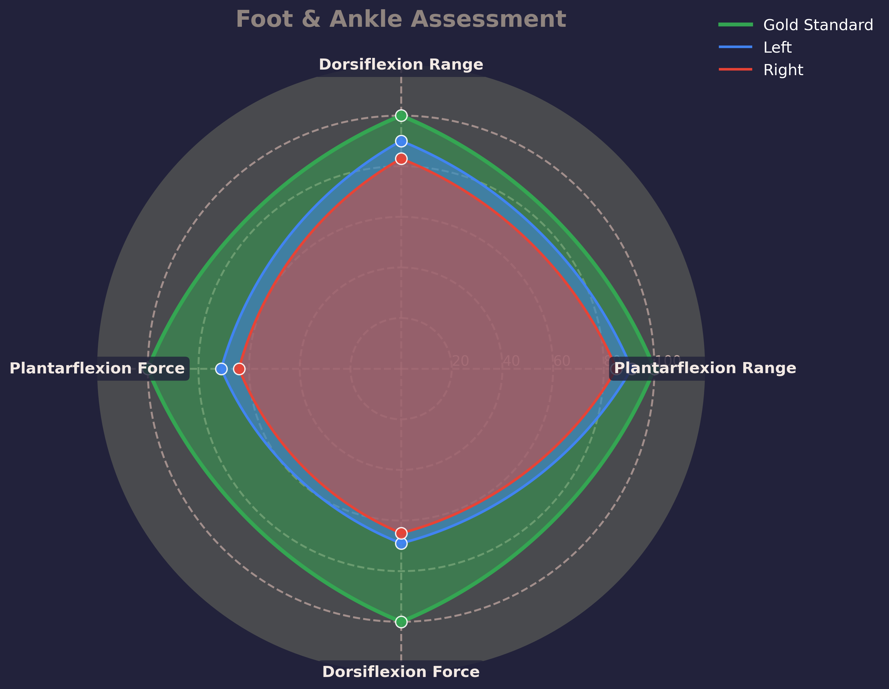

1. The Left foot: Your left rear foot had a centre of mass over the 2nd metatarsal which demonstrates you naturally stand in a neutral position. With your ankle in a state of dorsiflexion (knees over toes) you could pronate the leg but there was little to no movement at the mid foot to promote this. You were not able to supinate very effectively as there was little translation of this through your medial arch. Your left ankle had poor range and strength in dorsiflexion and was 10% weaker in plantar flexion. You also need to start building some more control and awareness.
2. The Right foot: Your right foot was very similar to the left but could pronate slightly better. The right foot had similarly poor range of motion in dorsiflexion.
3. Foot and Ankle summary: Asymmetry is present, with both feet having poor range and strength in dorsiflexion. What was most notable was your inability to effectively articulate the bones of the mid-foot. There is a lack of movement and control through the fascia on the sole of the foot. Subconscious movement (not controlled gym based movement but more dynamic gait cycle movements) should be introduced along with motion to promote lengthening of the tissues in your foot. In order to generate force or contract, we must first lengthen the tissue through articulation.
